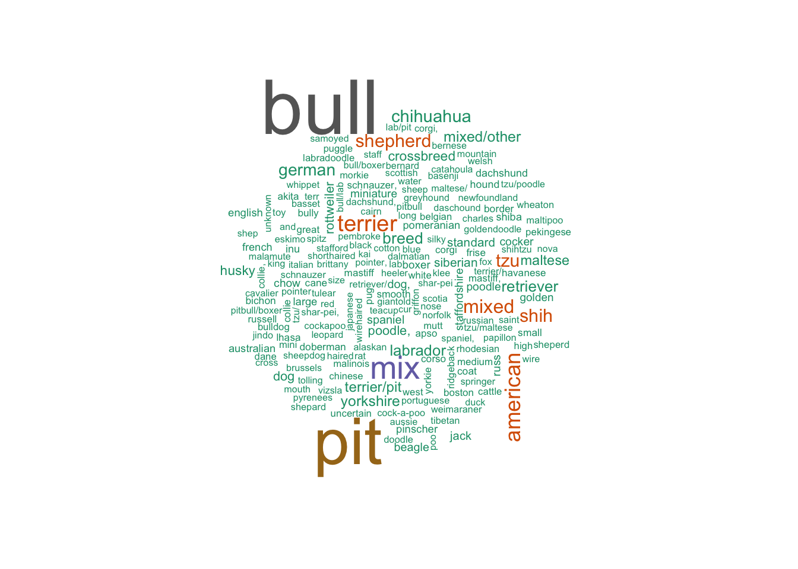

library(tidyverse)
library(knitr)
library(rvest)
library(broom)
library(dplyr)
library(purrr)
library(ggplot2)
library(plotly)
library(readxl)
library(reshape2)
library(akima)
library(wordcloud)
library(tm)# NYC zip code
url = "https://p8105.com/data/zip_codes.html"
ny_zip_codes = read_html(url) |>
html_table() |>
data.frame() |>
janitor::clean_names() |>
mutate(
borough = factor(
county,
levels=c("Bronx","Kings","New York", "Queens","Richmond"),
labels=c("Bronx","Brooklyn","Manhattan","Queens",
"Staten Island")))
valid_zipcodes = pull(ny_zip_codes, zip_code)# Dog bite
dog_bites_df = read_csv("data/Dog_Bites_Data.csv", na = c("NA", "", ".")) |>
janitor::clean_names() |>
rename_with(~ gsub("^x", "", .))
# glimpse(dog_bites_df)
# summary(dog_bites_df)
unique_breeds <- dog_bites_df %>%
pull(breed) %>%
unique() %>%
paste(collapse = ", ")dog_licensing_df = read_csv("data/NYC_Dog_Licensing_Dataset.csv", na = c("NA", "", ".")) |>
janitor::clean_names() |>
rename_with(~ gsub("^x", "", .))# data clean
dog_bites_clean = dog_bites_df |>
mutate(date_of_bite = as.Date(date_of_bite, format = "%B %d %Y")) |>
mutate(year = format(date_of_bite, "%Y"),
month = format(date_of_bite, "%m"),
day = format(date_of_bite, "%d")) |>
mutate(year = as.factor(as.numeric(year)),
month = factor(as.numeric(month), levels = 1:12),
day = as.factor(as.numeric(day))
) |>
mutate(breed = str_to_lower(breed))# ploty
top_breeds = dog_bites_clean |>
group_by(breed) |>
summarise(count = n()) |>
arrange(desc(count)) |>
filter(!is.na(breed) & breed != "unknown") |>
slice_head(n = 10)
top_breed_inter = plot_ly(
data = top_breeds,
labels = ~breed,
values = ~count,
type = 'pie',
textinfo = 'label+percent',
hoverinfo = 'label+value+percent',
marker = list(line = list(color = '#FFFFFF', width = 2))
) |>
layout(
title = "Top 10 Breeds Involved in Bite Count",
xaxis = list(showgrid = FALSE, zeroline = FALSE, showticklabels = FALSE),
yaxis = list(showgrid = FALSE, zeroline = FALSE, showticklabels = FALSE)
)
top_breed_interbreeds <- dog_bites_clean |>
filter(breed != "unknown") |>
drop_na(breed) |>
pull(breed)
breeds <- tolower(breeds)
breed_text <- paste(breeds, collapse = " ")
breed_source <- VectorSource(breed_text)
breed_corpus <- Corpus(breed_source)
breed_tdm <- TermDocumentMatrix(breed_corpus)
breed_matrix <- as.matrix(breed_tdm)
breed_freq <- sort(rowSums(breed_matrix), decreasing = TRUE)
set.seed(1234)
wordcloud(
names(breed_freq),
freq = breed_freq,
scale = c(4, 0.5),
max.words = 200,
colors = brewer.pal(8, "Dark2")
)
gender_spay_plot = ggplot(dog_bites_clean, aes(x = gender, fill = spay_neuter)) +
geom_bar(position = "dodge") +
theme_minimal() +
labs(title = "Dog Bites by Gender and Spay/Neuter Status",
x = "Gender",
y = "Count of Dog Bites",
fill = "Spay/Neuter Status") +
scale_fill_brewer(palette = "Set1") +
theme(plot.title = element_text(hjust = 0.5, size = 15))
# Display the static plot
gender_spay_plot_inter = ggplotly(gender_spay_plot)
gender_spay_plot_interIn New York City,